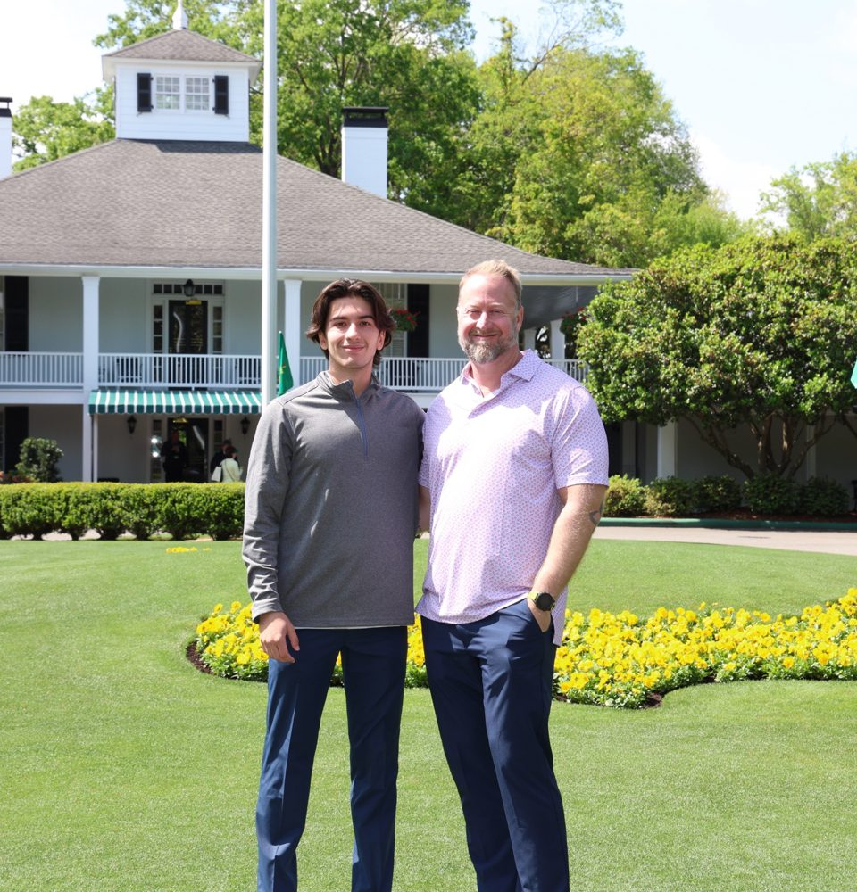

Cybersecurity Student
Cybersecurity student at USF graduating December 2027, looking for a cybersecurity internship for summer 2027, mainly in SOC and threat detection.
I'm a junior at the University of South Florida's Bellini College of Artificial Intelligence, Cybersecurity, and Computing, with a 3.82 GPA and Dean's List recognition. I'm in the ReliaQuest Security Operations Labs program this fall, I'm studying for Security+, and I go to Whitehatters, USF's security club. I'm also in Delta Tau Delta, where I've been Finance Chair.
Highlights:
Three separate AWS Academy labs: building a VPC with a web server, restricting access with security groups and network ACLs, and alerting on security group changes and failed logins with CloudTrail and CloudWatch.
Hands-on detection work across offense and defense: a Python tool that flags SSH brute-force attempts in auth logs, validated against a live Hydra attack, and a Suricata IDS with a custom rule tested on my own ping and Nmap traffic.
Write-ups of Hack The Box machines and Academy modules, covering web exploitation, Metasploit, and password attacks.
Python script that saves SHA-256 hashes of a folder and reports added, changed, and deleted files on the next scan.

Outside of cybersecurity, I've played sports my whole life, and that team mindset led me to join Delta Tau Delta and become part of a great brotherhood. On most days you can find me in the gym or hanging out with friends and family.